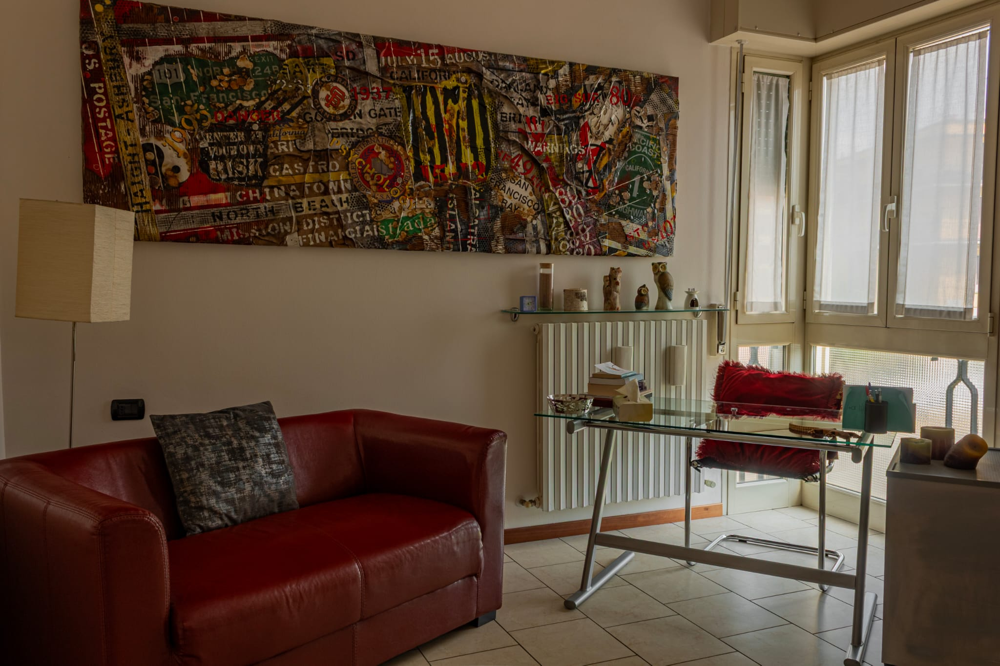

Clinica
Percorsi di psicologia e psicoterapia affidati al professionista più coerente con la richiesta.
PONTERANICA · BERGAMO
Psicologia e psicoterapia, un’équipe professionale, formazione e progetti sul territorio. Un luogo pensato per accogliere richieste diverse e orientarle con cura.

LO STUDIO
Studio DMB nasce dall’evoluzione di uno spazio condiviso da tre professioniste da molti anni. L’obiettivo è costruire una realtà comune, capace di unire attività clinica, confronto professionale, formazione e progettazione.
Il progetto mantiene la centralità della relazione terapeutica e aggiunge una struttura più organizzata: un punto di accesso unico, un’équipe selezionata e una rete di collaborazioni capace di crescere nel tempo.
Studio DMB è il nome di lavoro del progetto. Il nome definitivo sarà scelto dalle socie e potrà diventare un brand autonomo, riconoscibile sia per le persone sia per i professionisti.
QUATTRO DIREZIONI
Percorsi di psicologia e psicoterapia affidati al professionista più coerente con la richiesta.
Professionisti autonomi che condividono standard, spazi, organizzazione e possibilità di confronto.
Workshop, incontri e attività rivolte ai professionisti della relazione, dell’educazione e della cura.
Partnership e progetti con scuole, enti, cooperative e altre realtà locali.
PER LE PERSONE
Chi contatta lo Studio può essere orientato verso il professionista più adatto sulla base della richiesta, delle competenze disponibili e delle preferenze della persona.
Una richiesta attraverso i canali dello Studio.
Una prima comprensione generale della domanda.
Individuazione del professionista più coerente e disponibile.
Avvio del lavoro clinico nel rispetto dell’autonomia professionale.

PER I PROFESSIONISTI
Lo Studio vuole creare valore anche per chi vi collabora: ambienti professionali, identità comune, richieste che arrivano dai canali dello Studio, confronto con l’équipe e possibilità di partecipare a formazione e progetti.
OLTRE LA CLINICA
La crescita dello Studio non dipende esclusivamente dal numero di colloqui individuali. Formazione, workshop, partnership territoriali e il possibile sviluppo di un’area PdT permettono di costruire un ecosistema professionale più ampio.
Incontri tematici e laboratori rivolti a professionisti, educatori e operatori.
Interventi di promozione del benessere, prevenzione e progettazione sul territorio.
Uno spazio dedicato alla narrazione, alla formazione e allo sviluppo delle Storytelling Cards.
LE SOCIE FONDATRICI
Psicologa e psicoterapeuta · Socia fondatrice
Psicologa e psicoterapeuta · Socia fondatrice
Psicologa e psicoterapeuta · Socia fondatrice
Il valore dello Studio nasce dall’incontro tra esperienza clinica, nuove professionalità, attività formative e relazioni con il territorio.